Je suis ESTELLE,
bienvenue dans mon SYSTÈME SOLAIRE.
VOUS êtes sur le point de visiter la planète
PORT'FOLI-O,
mais avant cela, j’aimerai vous parler de moi,
l’ÉTOILE de ce système.
Je me suis souvent demandée au cours de mes études pourquoi je voulais faire de l’art, du design graphique:
QU’EST-CE QUE ÇA VEUT DIRE
« ÊTRE ARTISTE » ?
Cette réponse, je n’ai commencé à la toucher du doigt qu’au cours de ma dernière année d’étude, et c’est en faisant une
pause après mon diplôme en poche que
j’ai pu encore plus me rapprocher de
cette évidence.
Je suis créative, je pratique de multiples arts car c’est un besoin vital.
J’ai besoin d’exprimer mon monde intérieur,
de délivrer un message.
J’ai cette capacité, de transformer une pensée, une émotion, un message en quelque chose de tangible, et c’est justement pour ça que j’ai choisi de devenir designer graphique.
J’ai à cœur de mettre ce pouvoir qui est le mien au service des autres, de les aider à exprimer les messages qu’ils ont envie de crier au monde, de créer et rendre tangible ce monde intérieur de la meilleure manière qui soit.
C’est aussi pourquoi je me suis rapprochée et pratique de nombreuses formes d’arts, mais aussi étudie la sphère psychologique de l’humain.
Grâce à toutes ces cordes à mon arc,
je peux traduire de la meilleure manière,
n’importe quelle demande inspirée,
et à mes yeux,
c’est la plus belle chose qui soit.